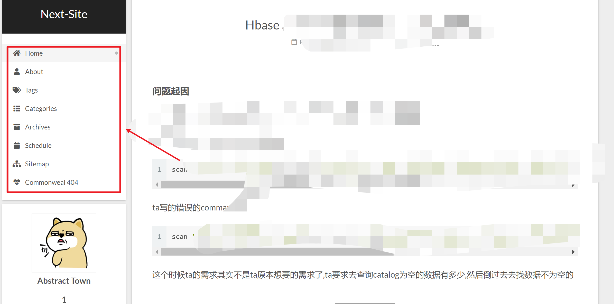

Github搭建网页
创建一个专用的仓库,其中仓库的名称需要固定的格式:username.github.io,其中username是自己的github用户名.
可以尝试勾选
Initialize this repository with a README,这样,生成之后,打开就可以看到README.md的内容了.
使用jelly主题优化页面
github提供了简单的方式更改页面
Hexo博客框架
Hexo 是一个博客框架.它把本地文件里的信息生成一个网页.如果不需要放在网上给别人看,就没 Github Pages 什么事了.
使用 Hexo 之前,需要先安装 Node.js 和 Git.
这里注意的是,安装npm尽量可以使用nvm进行环境控制
安装完上面两个环境之后.开始安装Hexo:
Hexo安装
- 打开npm环境
- 输入
npm install -g hexo-cliornpm install -g hexo回车安装(我测试后一个好一点) - 输入:
hexo -v查看是否安装成功(得到hexo-cli:xxx等数据)
创建本地blog
- 创建一个存放blog的文件夹
- 右击文件夹:Git Bash Here
hexo initnpm install安装依赖hexo ggenerate 生成网页hexo ssever 运行网页- 通过http://localhost:4000/访问
创建新的一篇blog(并发布)
- 继续在Git bash中输入:
hexo new "新发布的blog的名称" - 编辑在source_posts中生成的
新发布的blog的名称.md文件 hexo g+hexo s,就可以在http://localhost:4000/中看到效果了
将本地blog发布的github中
- 找到github的repo的链接,(git clone的那种).复制备用
- 修改Hexo的
_config.yml文件找到
#Deployment,填入以下内容1
2
3
4deploy:
type: git
repository: https://github.com/username/username.github.io.git
branch: master - Git Bash中输入:
npm install hexo-deployer-git --save安装hexo-deployer-git插件 hexo d运行插件(运行成功会有INFO Deploy done: git)
Next主题
Hexo是可以去自己选很多主题的,(也可以自己开发主题),这里我就介绍一个我自己使用的主题:Next^1
Next是国人开发,有中文文档.
安装Next主题
Git Bash输入:
git clone https://github.com/iissnan/hexo-theme-next themes/next(最新版改为git clone https://github.com/theme-next/hexo-theme-next.git themes/next)修改博客配置文件:
功能型配置:
- 打开blog配置文件
_config.yml - 找到
theme: - 把Hexo默认的lanscape修改为next即
theme: next
其他内容配置:
- 找到
# Site,添加博客名称,作者名称 - 在
language后面填入en或zh-Hans,选择英文或中文 - 找到
# URL填入url,比如url: https://username.github.io
- 打开blog配置文件
重新generate部署:
- Git Bash输入
hexo g -d就可以了(即先把修改的内容生成网页,再部署)
- Git Bash输入
Next主题配置修改
Scheme(样式修改)
在主题的配置文件(themes\next的_config.yml中):
设置
1 | # --------------------------------------------------------------- |
Gemini就是一个有侧边栏的简洁的Next主题.
menu的修改
同样是配置主题文件,修改如下:
1 | menu: |
配置的是下面的menu

这里功能并没有完善,主要参照一个Next主题配置的blog ^2
tags页面的生成以及给文章打tag^3
hexo 新建tags页面
1 | $ cd your-hexo-site |
修改tags页面内容:
1 | --- |
其他的页面打上tag(comments: false使用来禁用评论的)
1 | --- |
categories页面生成和文章划分^3
hexo 新建categories页面
1 | $ cd your-hexo-site |
修改categories页面内容:
1 | --- |
其他的页面划分categories(comments: false使用来禁用评论的)
1 | --- |
其他页面^3
其他的页面可以通过类似方式,或者生成md,或者直接使用html.最后使用主题配置文件引入.
设置头像
这里同样,主要参照一个Next主题配置的blog ^2;
配置主题文件修改如下:
1 | # Sidebar Avatar |
其中将头像放到\theme\next\source\images里面
设置social
这里同样,主要参照一个Next主题配置的blog ^2;
1 | social: |
这里我只是添加了一个email.其他的都没添加
修改字体大小
当前使用的Next主题版本字体大小的修改同以前^2并不一致.
以前可以直接使用主题配置文件进行配置,现在我们需要使用\themes\next\source\css\_variables\base.styl中直接修改.
1 | // Font size |
这里面是不同像素下的字体大小,可以根据自己需要,调整;
Next主题切换Scheme之后,上传Github不生效
多运行几次下面的指令:
1 | hexo clean |
并且别忘了清除缓存
首页设置read more
这个部分比较坑,目前必须要在文章中插入
<!-- more-->,才可以在页面中显示
md语法展示图片
这个分为三部分:
- Hexo的配置
打开hexo的配置文件_config.yml
找到 post_asset_folder，把这个选项从false改成true
- hexo-asset-image插件
这个插件的安装就是一个问题,有依赖是找不到的,导致插件安装失败.
通过下面的npm安装插件依赖安装失败的问题方案,解决了安装问题
- 调试和修改
即使安装好了之后仍然是有错的,研究了一下里面的实现逻辑,在一篇改动插件代码的文章的帮助下,开始修改.
将image标签的src改为,基于绝对定位的路径
研究过程略过,最后修改的地方如下(注释的为修改前,未注释为修改后)
1 | // $(this).attr('src', config.root + link + src); |
npm安装插件依赖安装失败的问题
这里我犯了一个错误,自以为是的认为,npm的依赖安装失败一定不是镜像的问题,还反驳了指出我错误的xx同学,这里表示诚挚的歉意.
这里解决这个问题的办法就是换源.
我进行换源的方式如下:
1 | # 首先,永久设置淘宝的mirror作为registry |
没有介绍的功能
目录的生成标签的使用- 评论系统
- 底部的链接
- etc^……